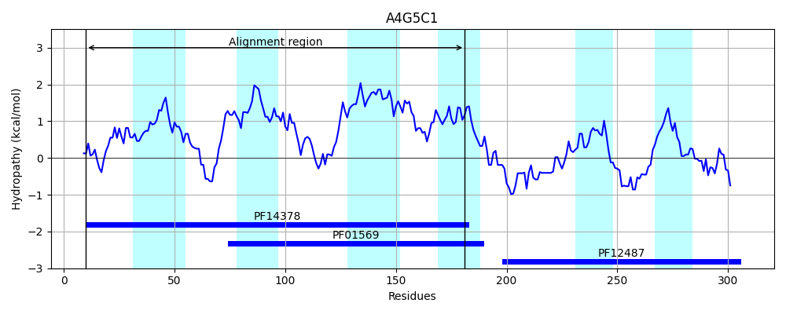
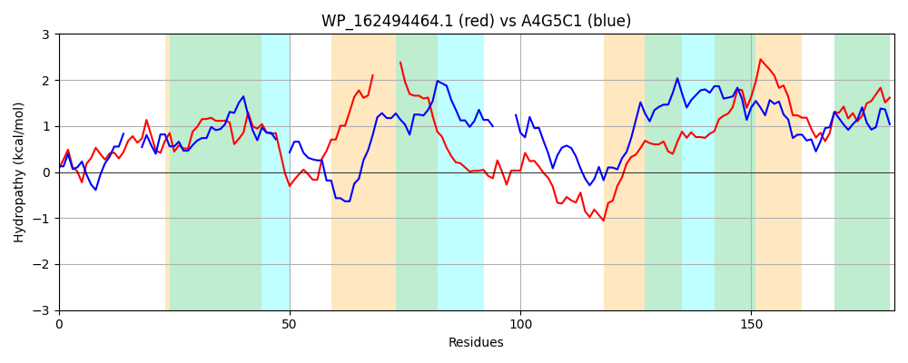

Hit Accession: A4G5C1
Hit TCID: 9.B.105.1.2
Hit Description: gnl|BL_ORD_ID|397 gnl|TC-DB|A4G5C1|9.B.105.1.2 Putative uncharacterized protein OS=Herminiimonas arsenicoxydans GN=HEAR1543 PE=4 SV=1
Mach Len: 181
e:0.000036
Query TMS Count : 6
Hit TMS Count: 6
TMS-Overlap Score: 3.350000
Predicted Substrates:None
BLAST Alignment:
Score: 101 , Bit scores: 43 bits, E-value: 3.6e-05, Alignment length: 181, Percentage identity: 25
Query: 34 WSPVDSAIFHFFNHGVSLSHAYAWLLAIINNRAFDACSLLAMGCLMLRYWLKAPPAGRRQIAIMGLVML-----LAAVIINQLAQHLMPVQRASPSLFFHDVTRVSDVVNFPTKDASKDSFPGDHGMMLLIFASFMWRYFGRRALTVALVIFVVFAFPRVMIGAHWFSDIAVGSLTAVLIG 209
W ++ ++F NH S + LLA + + A D S+ + C++L L A R L+ L L +I L+ L+ V A P + + V SFP H + + A +WR LV V + R+ GAH+ +D+ GSL + G
Sbjct: 10 WDGLNVSLFQAINHS---SGEFLSLLAYVGSIAGDYRSMPLLLCVLLL--LAHRRAQREDFLSAALLRLQARRFLVGFLIAWLSAGLLKVWLAFP----RPLAVLGSSVQMIGSPHDLYSFPSGHAVYAALVAVVLWRLVTSIFRPALLVFIVWVGWSRIAAGAHFPADVIAGSLIGAMSG 181 | Protein Hydropathy Plots: |
|---|
 |  |
Pairwise Alignment-Hydropathy Plot:
|
|---|
|  |